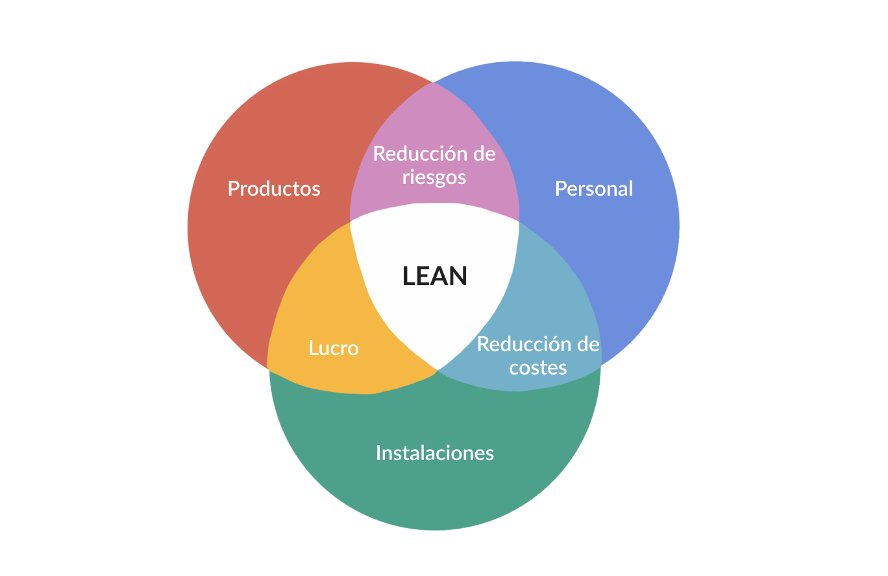

Metodología Lean

INFORMACION PRINCIPAL
¿QUÉ ES?
es un método innovador que busca optimizar los procesos de gestión y productivos de la empresa que lo ponga en práctica. De este modo se utilizan menos recursos, por lo que cualquier proceso se convierte en más eficiente. Su máxima está en reducir la inversión, el tiempo y el esfuerzo.
Ventajas de la Metodología Lean
- Reduce costes
- Satisfacción de los clientes
- Menos riesgos
- Reducción del plazo de ejecución y de las actividades sin valor
- Trabajo en equipo
Modelo de transformación de Lean
- Propósito
- Mejora Procesos
- Desarrollo Capacidades
- Modelo de Gestión y Liderazgo
- Pensamiento Básico